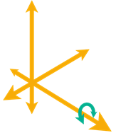

<div id="bestFitMethod"><p>パーツの位置合わせで自由に変換できる軸を指定します。ご使用のマシンとポスト プロセッサでサポートされている方法を選択します。</p>
<ul>
<li><b>3 軸</b>: 1 つ、2 つ、または 3 つの直線軸に沿った移動を有効にします。</li>
<li><b>4 軸</b>: すべての直線軸に沿った移動と、1 つの回転軸を中心とした回転を有効にします。</li>
<li><b>5 軸</b>: すべての軸を基準にした移動と回転を有効にします。</li>
</ul>

<table class="tipTable" cellspacing="10">
<tr>
<td><center></center></td>
<td><center></center></td>
<td><center></center></td>
</tr><tr>
<td><center><p><b>3 軸の例</b><br></p></center></td>
<td><center><p><b>4 軸の例</b><br></p></center></td>
<td><center><p><b>5 軸の例</b><br></p></center></td>
</tr></table>
</div>